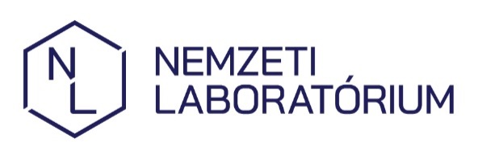

Szabad szemmel láthatatlan mikroszkopikus részecskék. Főleg fűtésből/forgalomból származnak, és belélegezve a tüdőbe juthatnak.
A Bükk levegője országosan is kiemelkedően tiszta, itt általában kiváló értékeket mérünk.